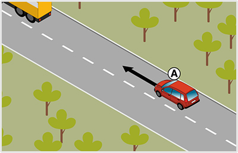

- 377. Ön a ’B’ jelű gépkocsit lakott területen kívül kb. 80 km/h sebességgel vezeti. Mikor tart megfelelő követési távolságot az ’A’ jelű gépjármű mögött? #703957
- Ha ez a távolság elegendő ahhoz, hogy az elöl haladó jármű mögött - annak hirtelen fékezése esetén is - meg lehessen állni.
- Ha legalább 20 méter távolságban követi a másik járművet, ami bőven elegendő ahhoz, hogy fékezés esetén meg tudjon állni mögötte.
- Ha olyan távolságban követi a másik járművet, hogy a két jármű közé legalább egy személygépkocsi biztonságosan besorolhasson.

- 378. Az alábbiak közül melyik a helyes áthaladási sorrend az ábrán látható útkereszteződésben? #704223
- ’A’ - ’C’ - ’B’.
- ’B’ - ’A’ - ’C’.
- ’C’ - ’B’ - ’A’.
- ’C’ - ’A’ - ’B’.
- ’B’ - ’C’ - ’A’.
- 379. Legfeljebb milyen távolságban szabad követni járművel egy másik járművet? #704369
- Olyan távolságban, hogy az elöl haladó jármű mögött hirtelen fékezése esetén is meg lehessen állni.
- Mindig 10 méternél nem kisebb távolságra.
- Olyan távolságban, hogy a tompított fényszórónk ne vakítsa el az elöl haladó jármű vezetőjét.
- 380. Milyen távolságban szabad követni járművel egy kerékpárost? #704370
- Olyan távolságban, hogy a kerékpáros mögött, annak hirtelen fékezése esetén is meg lehessen állni.
- Tetszőleges távolságra lehet követni, erre nincs előírás.
- Olyan távolságban, hogy egy előzést végző jármű még beférjen járművünk és a kerékpáros közé.
- 381. Egyéb jelzés hiányában milyen távolságban szabad követni egy 8 méter hosszúságú járműszerelvénnyel egy személygépkocsit lakott területen kívül egy forgalmi sávos úton? #704372
- Olyan távolságban, hogy a két jármű közé legalább egy - előzést végrehajtó - személygépkocsi még biztonságban besorolhasson.
- Olyan távolságban, hogy a két jármű közé legalább egy - előzést végrehajtó - tehergépkocsi még biztonságban besorolhasson.
- Olyan távolságban, hogy az elöl haladó jármű mögött hirtelen fékezése esetén is meg lehessen állni.
- 382. Fékezhet-e hirtelen, ha egy figyelmetlen gyalogos váratlanul az Ön által vezetett jármű elé az úttestre lép? #704373
- Igen, ha ezt a személy- vagy vagyonbiztonság megóvása szükségessé teszi.
- Csak akkor, ha az Ön mögött haladó megfelelő követési távolságot tart.
- Nem, mert hirtelen fékezni sosem szabad.
- 383. Köteles-e elsőbbséget adni egyenrangú útkereszteződésben a jobbról érkező villamos részére? #704374
- Igen.
- Nem, csak a balról érkező villamos részére kell elsőbbséget adni.
- 384. Köteles-e elsőbbséget adni egyenrangú útkereszteződésben egy jobbról érkező kerékpáros részére? #704375
- Igen.
- Nem, csak gépjárművek részére kell elsőbbséget adni.
- 385. Köteles-e elsőbbséget adni egyenrangú útkereszteződésben a balról érkező trolibusz részére? #704376
- Nem.
- Igen.
- 386. Köteles-e elsőbbséget adni egyenrangú útkereszteződésben a balról érkező figyelmeztető jelzést használó gépjármű részére. #704377
- Nem.
- Igen.
- 387. Köteles-e elsőbbséget adni egy földútról érkező megkülönböztető jelzéseit együttesen használó gépjármű részére? #704378
- Igen.
- Nem.
- 388. A körforgalomban egy olyan villamospályát keresztez, amelyen egy villamos hajt be a körforgalomba. Mikor jár el szabályosan? #715083
- Ha elsőbbséget ad a körforgalmat keresztező villamos részére.
- Ha elhalad a villamos előtt, mivel a körforgalomba behajtó villamos köteles elsőbbséget adni.
- Ha a kölcsönös udvariasság alapján megegyeznek az áthaladási sorrendben.

- 389. Ön az ’A’ jelű személygépkocsit vezeti. Mekkora követési távolságot kell tartania az elöl haladó tehergépkocsi mögött lakott területen kívül? #715300
- Olyan követési távolságot kell tartania, amely elegendő ahhoz, hogy az elöl haladó jármű mögött - ennek hirtelen fékezése esetében is - meg lehessen állni.
- Olyan követési távolságot kell tartania, hogy a két jármű közé legalább egy - előzést végrehajtó - személygépkocsi biztonságban besorolhasson.
- A féktávolságnak megfelelő követési távolságot.